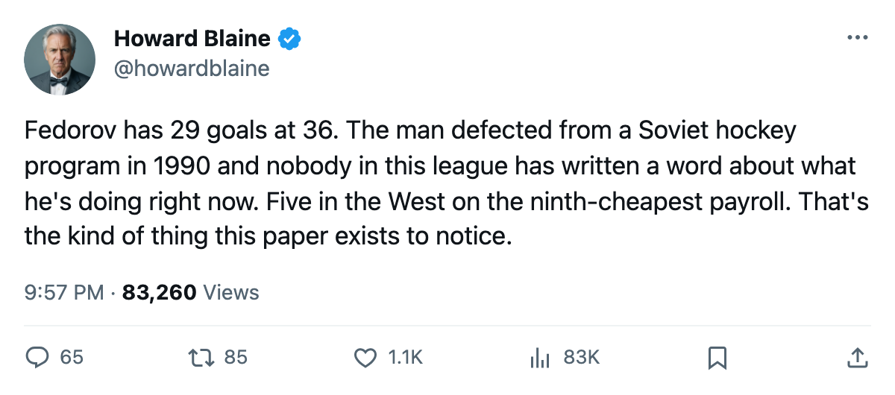
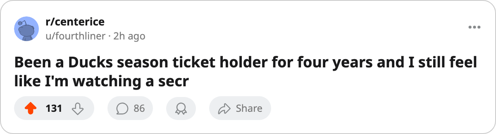

Nine and One: Anaheim Has Won 9 of Its Last 10, and the Man Driving It Is 36 Years Old From Pskov
The Ducks are 5th in the Western Conference on $1.48M a point, and Sergei Fedorov has 29 goals at an age when most men are coaching
 Howard BlaineSenior writer, The Blaine Rankings · The Hockey Gazette
Howard BlaineSenior writer, The Blaine Rankings · The Hockey Gazette
 Mighty Ducks of Anaheim has won 9 of its last 10 games. The Ducks are 5th in the Western Conference at 37 points, 3 ahead of the 8th seed, and they have done it on $54.64M of payroll, which comes to $1.48M per point, the 9th-cheapest rate in the league. Nobody in this league has written about them. The reason, as far as I can tell, is that their name is Anaheim.
Mighty Ducks of Anaheim has won 9 of its last 10 games. The Ducks are 5th in the Western Conference at 37 points, 3 ahead of the 8th seed, and they have done it on $54.64M of payroll, which comes to $1.48M per point, the 9th-cheapest rate in the league. Nobody in this league has written about them. The reason, as far as I can tell, is that their name is Anaheim.
The streak began with 3 wins in early December, was broken by a single regulation loss, and then went 6 straight without a break. They are 11-5 at home this season and 7-9 on the road, which means the current stretch is built on wins in Honda Center where the building sits 15,388 deep on a good night and the scoreboard reads $81 a ticket. They are profitable, $22.32M of it this season, and they are 5th in the conference with two fewer games remaining than the 8th-place  Columbus Blue Jackets club.
Columbus Blue Jackets club.
At the center of it is  Sergei Fedorov86, 36 years old, 29 goals in 32 games. That is a 74-goal pace over 82 games. He had 71 last season. He has never scored fewer than 40 in a full year in this league that the record shows. His 44 points on 29 and 15 give him a 113 pace, and he carries a $6.30M salary with 3 year(s) left on the deal. The Book has him at 86, which the Bureau's Development Index places 1 below his base grade of 94. His morale reads 97.
Sergei Fedorov86, 36 years old, 29 goals in 32 games. That is a 74-goal pace over 82 games. He had 71 last season. He has never scored fewer than 40 in a full year in this league that the record shows. His 44 points on 29 and 15 give him a 113 pace, and he carries a $6.30M salary with 3 year(s) left on the deal. The Book has him at 86, which the Bureau's Development Index places 1 below his base grade of 94. His morale reads 97.
 Vyacheslav Kozlov74 has 39 points in 31 games, 9 goals and 30 assists, a 103 pace. At 33, he is the second man on this roster making a living from a skill that does not dim the way speed does. He and Fedorov are 70 years old between them and they are the Ducks' top two scorers. The third name on the list is
Vyacheslav Kozlov74 has 39 points in 31 games, 9 goals and 30 assists, a 103 pace. At 33, he is the second man on this roster making a living from a skill that does not dim the way speed does. He and Fedorov are 70 years old between them and they are the Ducks' top two scorers. The third name on the list is  Jean-Sebastien Giguere93, not as a scorer but as the man holding a 2.11 goals-against average and a 0.890 save percentage across 24 games. He won the Vezina last season. This season he has a 13-11 record and no shutouts, and the team has won 9 of 10 anyway.
Jean-Sebastien Giguere93, not as a scorer but as the man holding a 2.11 goals-against average and a 0.890 save percentage across 24 games. He won the Vezina last season. This season he has a 13-11 record and no shutouts, and the team has won 9 of 10 anyway.
What the record says about how it happened
The Ducks are 10-13-1 overall. Their OT wins, 8 of them, account for 16 of their 37 points. They have won games in overtime at a rate that would be unsustainable over a full season, and they have done it with a goaltender who has not yet found a shutout and a defense that allows 75 goals in 32 games, 2.34 a night. That number is the 6th-best in the league.
| Club | GP | W | L | OTL | Points | GF | GA | GA/G | Last 10 |
|---|---|---|---|---|---|---|---|---|---|
| ANA | 32 | 10 | 13 | 1 | 37 | 72 | 75 | 2.34 | W6 |
| DAL | 33 | 20 | 7 | 4 | 48 | 86 | 63 | 1.91 | W6 |
| STL | 31 | 20 | 6 | 4 | 46 | 89 | 76 | 2.45 | W3 |
| NSH | 31 | 15 | 7 | 3 | 45 | 92 | 79 | 2.55 | W4 |
| CGY | 32 | 14 | 12 | 2 | 38 | 84 | 80 | 2.50 | L1 |
The gap between Anaheim and the top three is large. The gap between Anaheim and the 8th seed, Columbus, is 3 points with 2 games in Columbus's favor, which with a road record of 7-9 and an overtime dependency that will regress is a cushion, not a lead.
The Fedorov arithmetic
He defected from the Soviet national team at the Goodwill Games in Portland in July of 1990. He was drafted 74th overall in 1993. He has played 16 seasons in this league and is scoring at a rate that puts him 5th among all centers in the current standings, ahead of  Joe Thornton91's 41 points and tied with
Joe Thornton91's 41 points and tied with  Jarome Iginla92's 44. His 29 goals lead all men over 35 by at least 5.
Jarome Iginla92's 44. His 29 goals lead all men over 35 by at least 5.
The Development Index has him below his base by 1. The desk reads that as the system acknowledging age while the production continues. His contract has 3 years left at $6.30M. He will be 39 when it ends. The Ducks are 5th in the West today. The question for April is whether a team that has won 8 of its games in overtime can survive a stretch where they do not.
On a night when the Ducks win in regulation, the math is simple. On a night when it goes to overtime, Jean-Sebastien Giguere has kept them there. He faces 24 games of work in a 32-game sample, and his 2.11 goals-against sits behind only  Marty Turco97 and
Marty Turco97 and  Martin Brodeur93 among goaltenders with 20 or more starts.
Martin Brodeur93 among goaltenders with 20 or more starts.
Anaheim's season series in the Pacific division is 5 wins (2 regulation, 3 overtime) and 2 regulation losses in 7 games, 18 goals for and 14 against. They have 12 divisional games left. They are 2nd in the Pacific behind  Dallas Stars and 7 points ahead of
Dallas Stars and 7 points ahead of  San Jose Sharks.
San Jose Sharks.
Their payroll is the 20th-largest in a 30-team league. Their attendance is 4th-lowest. They are profitable, 5th in the West, and the best player on their roster is a man who was playing for the Soviet Union when most of the league was in junior. Nobody is covering them. They are 37 points and 5th in the conference at Christmas, and a 3-point cushion over the bubble holds unless something breaks on the ice.

